一、什么是掉期合约：外币融资的"换钱协议"
官方定义：人民币外汇掉期业务，是指银行与客户约定一前一后两个不同的交割日、方向相反的两次本外币交换。在前一次货币交换中，一方用外汇按约定汇率从另一方换入人民币；在后一次货币交换中，该方再用人民币按约定汇率从另一方换回相同币种和数量的外汇。
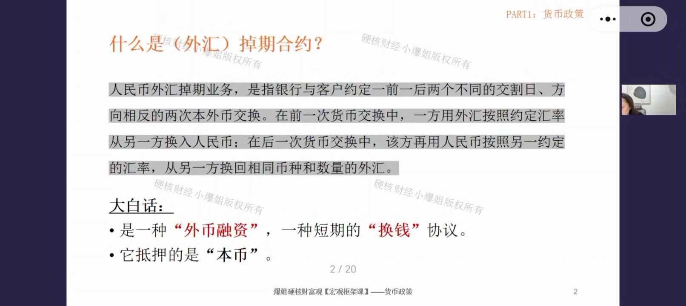
大白话总结（三个关键点）：① 掉期合约本质上是一种外币融资（不是本币融资）；② 它是一种短期的"换钱"协议——期限指一年以内，钱换来换去；③ 换钱过程中抵押物是本币——要通过抵押本币才能借出外币。
什么时候会用？当你需要进行外币融资，且同时需要锁定汇率的时候。两个条件通常同时发生——如果只做外币融资或只锁汇率，有很多其他工具可选；只有两者同时有需求，才一般用到掉期合约。
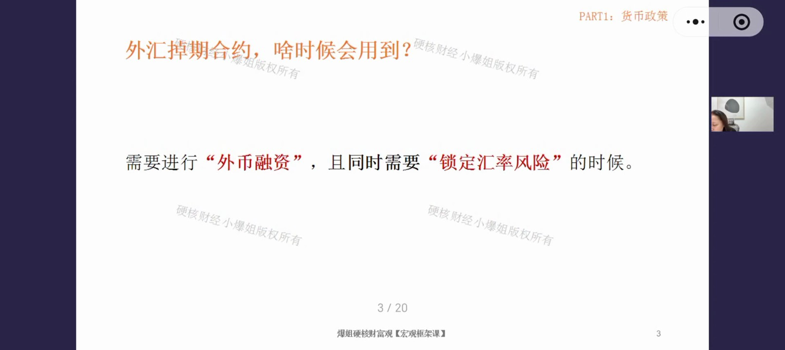
二、掉期的"双腿"结构：即期腿 + 远期腿
举例：一家公司现在就要用美元，但手里只有人民币，几个月后才有美元进账——两笔现金流发生期限错配。银行怎么帮它解决？只需卖给它一张掉期合约：
- 第一步：银行马上把公司抵押的人民币换成美元（现在立刻完成 → 这是即期腿/即期交易），解决当下要用美元的难题；
- 第二步：银行同步买入一张"未来用美元换回人民币"的远期合约，提前锁定汇率（未来才发生 → 这是远期腿/远期交易），美元进账时银行收走美元、归还人民币。
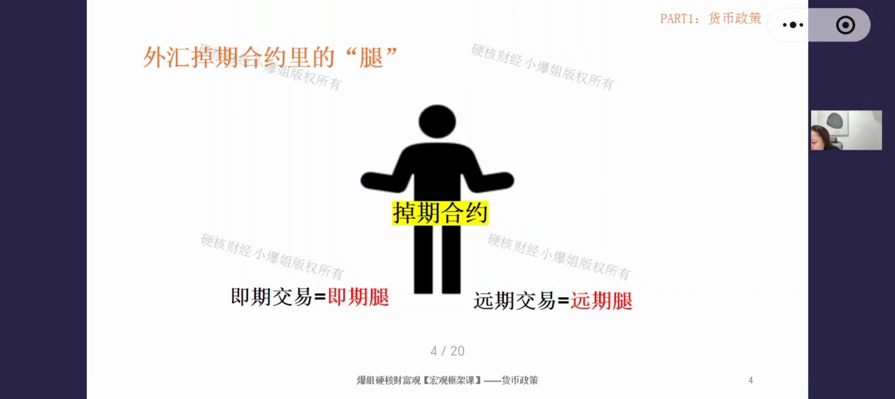
关键概念：掉期合约 = 即期腿 + 远期腿，两条腿缺一不可，必须打包在一起才构成掉期交易。就像人的两条腿，一边一条。后面所有内容都反复用"腿"这个词。
- 整个过程：你出人民币→转一圈拿回人民币；银行借你美元→转一圈收回美元。本质就是短期的换钱协议。
- 通过这一圈操作同时解决两个问题：① 借到外币（外币融资）；② 锁定未来换回汇率（汇率风险）。
三、掉期 vs 远期：方向与利率影响完全相反
远期合约和掉期合约最容易混淆，这里用同一个例子对比。假设一家企业需要1亿美元向海外支付，即期汇率 USD/CNY = 7.12。
① 远期合约（复习）
企业作为买方买一张6个月期 USD/CNY 远期合约，银行报价 7.06。注意：远期合约中 USD/CNY 表示"用后面的 CNY 换前面的 USD"（买方视角）。远期里利率高的货币会贬值——美元利率高于人民币，所以远期里美元贬值（7.12→7.06）、人民币升值。
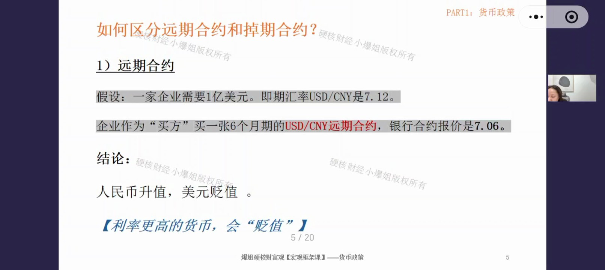
② 掉期合约（远期腿）
同样条件下买入6个月期 USD/CNY 掉期合约，约定6个月后按 7.06 换回。但注意：掉期合约的远期腿里，USD/CNY 表示"用前面的 USD 换回后面的 CNY"——与单纯远期合约方向相反，这是最容易混的点！
即期腿：用 CNY 7.12亿 换 USD 1亿；
远期腿：用 USD 1亿 换回 CNY 7.06亿。
结果：换回时少了 600万人民币——利率低的货币（人民币）在换回时产生"货币损失"。
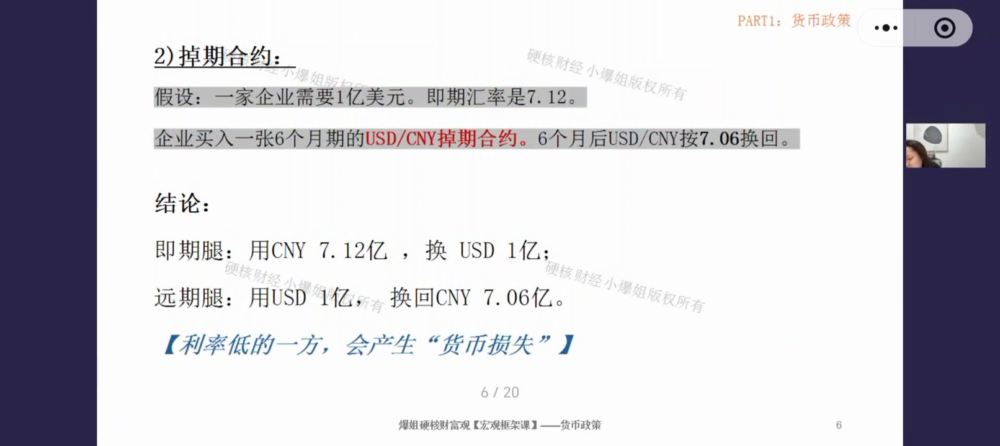
核心结论（必须区分）：远期合约里，利率高的货币贬值；掉期合约的远期腿里，利率低的货币换回时有损失（折损）。两个结论方向相反，因为掉期里你在远期腿是"用美元换回人民币"——哪个货币利率低，它在往回换时就更吃亏。
四、掉期的三大应用场景
什么情况下会常用到掉期合约？主要有三种情况：
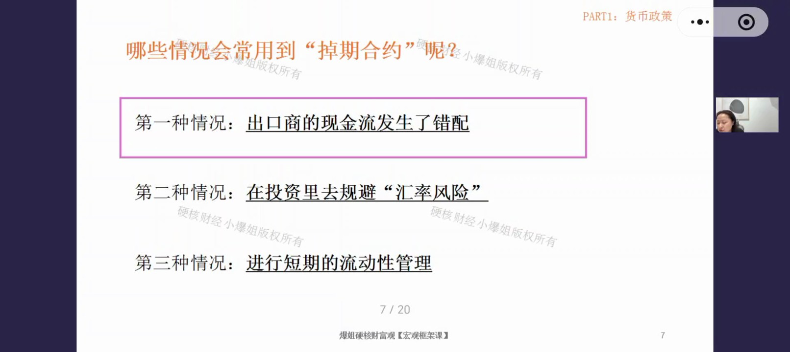
场景一：出口商的现金流发生错配
制造业出口商（如炼铜、炼钢企业）手里多是人民币，工作流是：先向海外预付美元采购原材料（铜矿、铁矿石）→ 加工成成品 → 半年后卖到海外赚美元 → 再把美元结汇成人民币。
- 不用的后果：如果直接换美元去买原料，6个月后收到美元换回人民币时，一旦人民币升值就会产生汇率损失，甚至亏本。
- 用掉期的好处：一笔交易同时解决"现在缺美元"（借你美元）+"未来收美元换回人民币"（锁汇）的双需求，融资成本可提前算出。
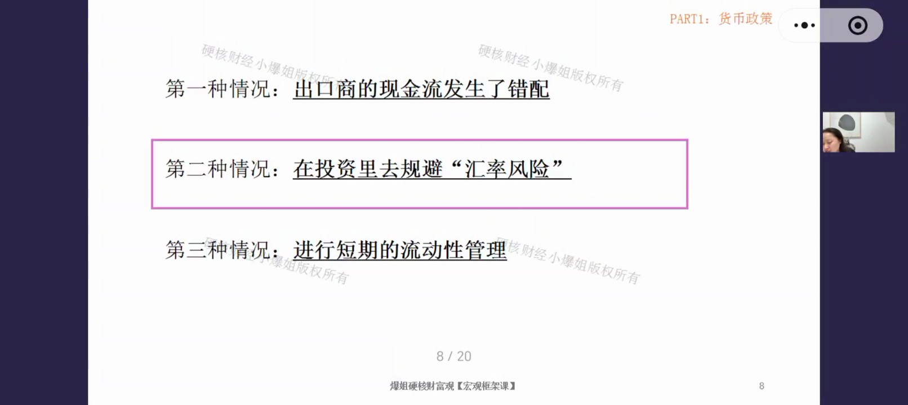
场景二：投资中规避汇率风险
国内 QDII 债券基金把人民币换成美元认购一年期美债，到期收回本息后再把美元换回人民币，按人民币计价折算年化回报。若不锁汇：一年期美债收益4%，但一年后人民币升值5%（USD/CNY 从7.2跌到6.84），汇率损失直接吃掉收益——债券投资要的是确定性，必须用掉期把未来换回汇率的风险解决掉。
- 掉期能精准匹配美债的期限和金额，交易结构简单；收益可提前计算（美债收益率确定 + 掉期报价确定 − 锁汇成本 = 基金收益）。
- 补充：多利宝等产品90%是债券打底，底层债基通过 QDII 配美债/3A级美元债，同样用掉期对冲汇率风险——这也是投顾费背后的"管理动作"。
场景三：短期流动性管理
做短期外币拆借、外币过桥等，没有具体目的，只为管理短期外币现金流。相比直接美元贷款（无风险利率+信用利差，可能6.5%），掉期合约的借款成本只有两国货币市场利率差，且汇率风险在远期腿里锁掉，成本显著更低。
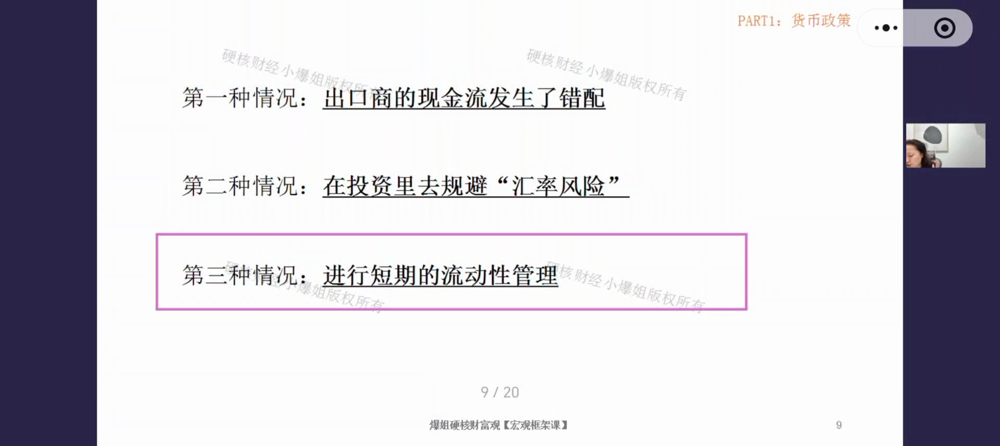
五、为什么买掉期，而不是自己组合？
很多人会问：既然掉期 = 即期 + 远期，我自己做这个组合不就行了？效果上确实等价，但掉期是打包产品，在执行、定价、风险上有5大优势：
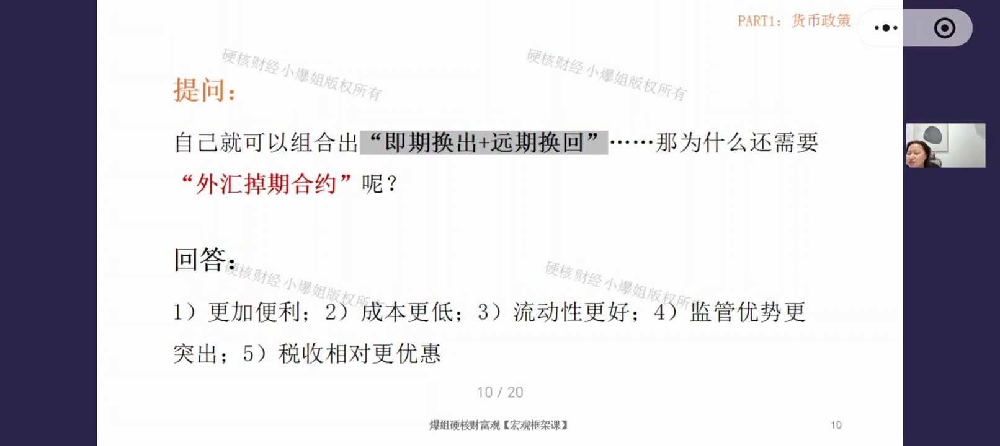
- 更加便利：掉期是单一交易，一次报价、一次结算；自己组合则是两笔独立交易，要自己协调即期和远期。
- 成本更低：打包交易免双重点差/佣金、潜在税收；自己组合等于付两次佣金、两个点差，大额交易下差异巨大。
- 流动性更好：掉期在外汇市场成交额巨大，随时可转让；央行也会用掉期形式释放流动性（美联储货币互换本质就是外汇掉期）。自己组合依赖即期、远期两个市场各自的流动性，可能出现期限错配没对手盘。
- 监管优势更突出：即期换汇是资本流出（受5万美元额度等高度监管）；掉期因远期腿要换回人民币、是打包的一对交易，监管视为跨境融资工具而非资本流出，宽松得多。
- 税收相对更优惠：掉期作为衍生品一般无资本利得税，欧盟等地有明确税收豁免；自己组合两次交易税务复杂。
六、掉期锁汇成本怎么算：货币市场利率相减
锁汇是有成本的。PPT 上的学术公式（CIP 利率平价）不用硬记，简单理解：掉期合约里的锁汇成本，就是两个货币的货币市场利率相减（不是国债利率）——不精准但误差不大。
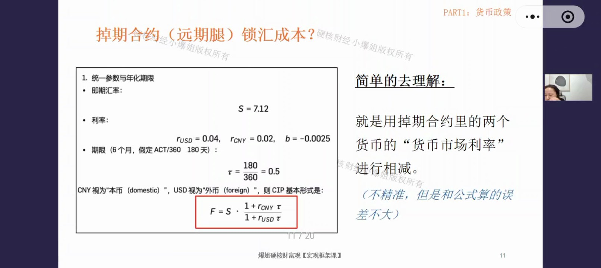
方向规则（用啥换啥）：USD/CNY（未来用美元换回人民币）→ 锁汇成本 = 美元利率 − 人民币利率；CNY/USD（未来用人民币换美元）→ 锁汇成本 = 人民币利率 − 美元利率。即用前面的货币利率减去后面的货币利率。
- 算出来是正数：低利率货币索汇需要付出额外成本（如美元4% − 人民币2% = +2%，人民币换美元回来要付2%成本）；
- 算出来是负数：高利率货币索汇反而能赚到钱（如人民币2% − 美元4% = −2%）。
- 锁汇不一定花钱，可能还赚钱——取决于你在掉期里是利率高的一方还是低的一方。
七、什么是基差：理论报价与实操报价的偏差
官方定义：通过外汇掉期或跨货币互换借入某种货币所隐含的利率，与在该货币货币市场直接借款利率之间的差额，一般以基点（bps）表示。基差不为零即意味着覆盖利率平价被打破。
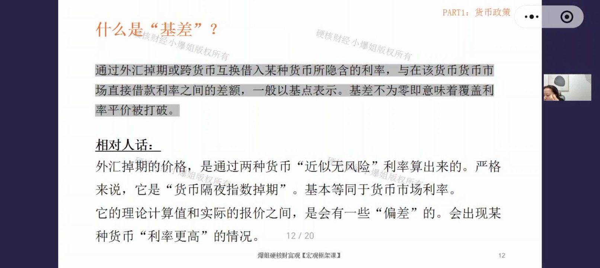
- 相对人话：外汇掉期的价格，是通过两种货币"近似无风险"利率算出来的（严格说叫"货币隔夜指数掉期"，基本等同于货币市场利率）。但理论计算值和实际报价之间会有偏差——现实中未必能真的按这个利率融到钱，会出现某种货币利率更高的情况。
- 基差用利率单位 BP 表示：1bp=0.01%，负25bps = 负0.25%。
- 市场惯例：基差算在"非美元腿"上（不是美元的那个货币上）——比如 USD/CNY 的基差加在人民币上。
举例：负基差怎么影响报价
假设：USD/CNY = 7.12；USD利率4%，CNY利率2%，基差 −25bps。
不考虑基差：1年期 USD/CNY 掉期理论报价 6.9831。
实际报价：6.9660 —— 二者相差 −171个掉期点（pips，1pip=万分之一）。
原因：负25bps算在人民币上 → 人民币利率从2%变为 2% + (−0.25%) = 1.75% → 与4%的美元利率差距变大 → 美元相对人民币更贵。
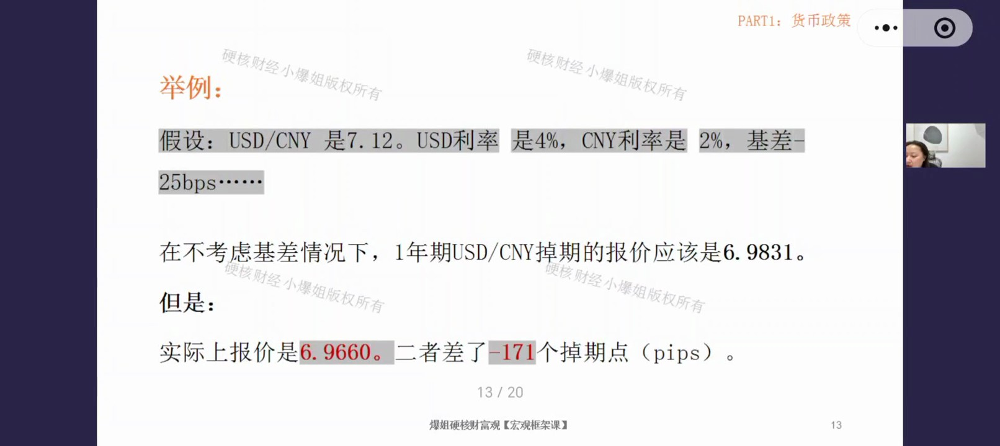
正负基差的含义：负基差 = 美元变得更贵（要高于美元利率才能借到美元）；正基差 = 美元变得更便宜（能以低于美元利率借到美元）。所有货币都有基差，只是美元作为霸权货币最热、基差最明显，取决于哪种货币更稀缺。
八、为什么美元更贵：基差的成因
基差为什么存在？两个原因合在一起，形成供需不平衡：
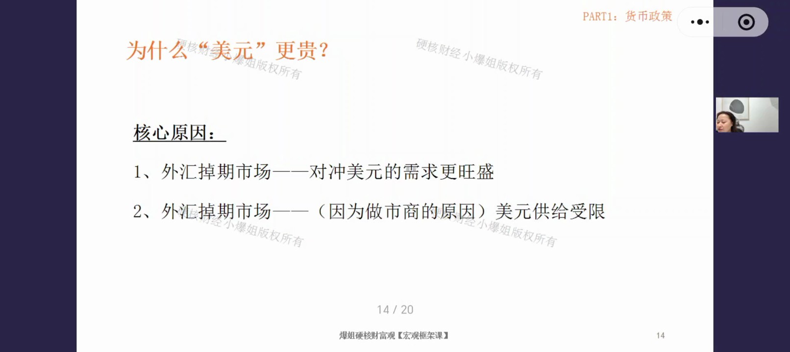
- 掉期市场对冲美元的需求更旺盛：直接即期换美元=裸奔投资美元资产；用掉期=在对冲前提下投资美元。机构（养老金、险资等低风险偏好资金）投美元债券（美债、美元信用债）一定采用掉期规避风险——"赚多少不重要，不能亏本"。美元资产是全球最大资产池，用的人多，对冲需求自然大。
- 做市商的美元供给能力受限：做市商主力是银行，监管对银行的资本金、风险指标、流动性指标要求极严。外汇掉期是跨币种衍生品、双币结算工具，占用银行更多资本/风险/流动性指标——同样1块钱资本，放国内货币市场能撬动更多资产，银行就不太愿意把美元借给掉期市场，除非能赚到更多回报。
结果：一边对冲需求持续变大，一边美元供给受限 → 供需失衡 → 美元在掉期市场产生溢价（基差），实际借出比美元利率更贵。其他货币同理，紧俏则基差大，宽松则基差小。
九、澄清误区：换汇存美元吃息差，是高风险赌博
问答社区和直播里反复被问到：国内存款利率只有1%左右，美元存款利率4%，能不能把人民币换成美元吃息差，赚好钱再拿回来？这个想法完全错误！
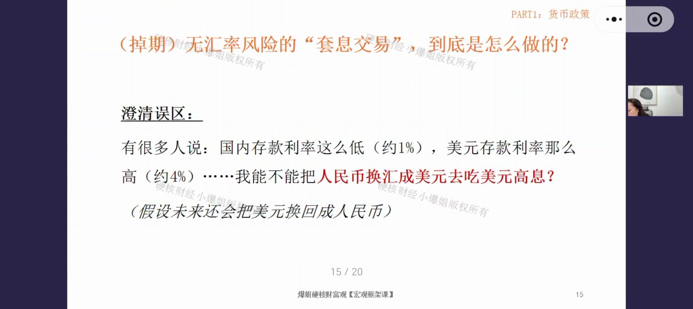
错误一：风险不匹配
存钱本来是无风险/低风险行为，但换汇+海外储蓄 = 高风险投资。跨币种就是跨境交易，必然叠加汇率风险——汇率一年波动5%-10%很正常，美元存款拿4%-5%，汇率波动10%就倒亏5%。它偏离了"安稳存钱"的风险范围。
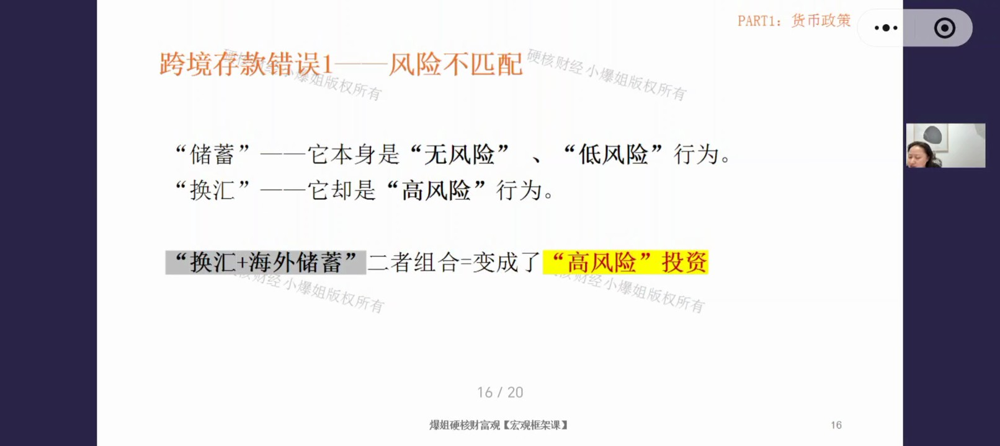
错误二：换汇成本高
普通人去银行换汇，一出一进换汇成本（价差+手续费）约1%-3%。美元存款4% − 国内存款1% = 3%息差，被换汇成本吃掉一半甚至全部；再叠加汇率波动，可能不赚钱甚至亏本。市面上有更好的中低风险选择（如R2级别的多利宝），别为了息差冒高风险。
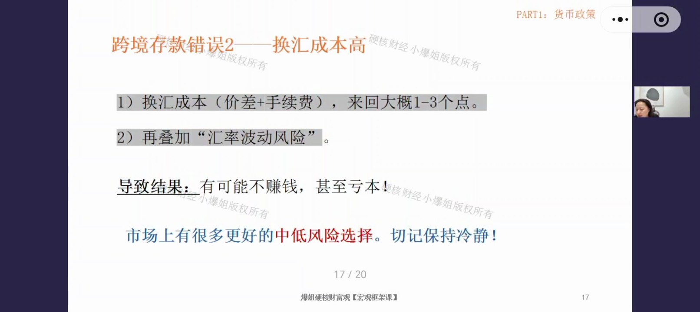
唯一可以换外汇的理由：因为要在海外买某种资产（美债、美股、黄金等）——换汇只是投资动作的"过路费"。如果只是换汇出去存着吃息差，绝对不可为。金融机构都是靠衍生品赚外汇的钱，没有机构用现汇这么玩；只有小白才拿真金白银现汇换汇去存美元储蓄，把无风险变成了高风险。
十、机构打法一：保险公司如何"吃高息"
以日本寿险公司为例：日本本地利率极低（约1%），寿险公司把钱挪到海外投美债赚息差，应付保费支出。作为最求稳的机构，它先通过掉期获得美元（日元押给银行换美元），再在远期腿换回日元。
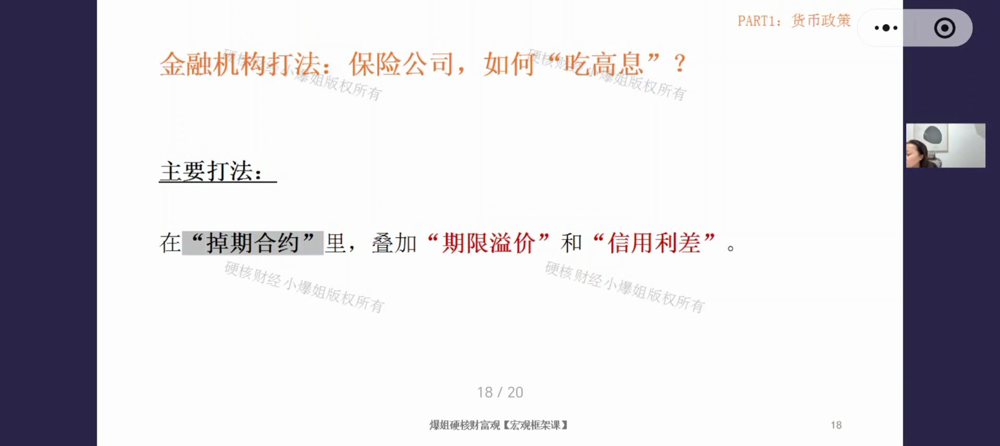
基础账：日元利率1%，美元利率4% → 锁汇成本 = 4% − 1% = 3% → 投美债4% − 锁汇3% = 只剩 1%，和投日本本地一样，那还投海外干什么？
答案：靠两个东西赚钱——期限溢价 + 信用利差。
① 期限溢价：期限错配 + 掉期滚动展期
- 假设1年期美债收益率4%，30年期美债5.1% → 期限溢价 = 5.1% − 4% = 1.1%。
- 操作：在1年期掉期合约的即期腿借出美元，去投30年期美债（期限错配）。掉期最长一年，到期不用卖美债，只需做掉期滚动续期（展期、价格重算），每年一直滚。
- 收益：掉期本身赚1% + 期限溢价1.1% = 2.1%。
② 信用利差：下沉到投资级信用债
- 日本寿险可投美国投资级债券（3个B以上，如IG债券），而非只有利率债（美债）。信用债 = 无风险利率 + 信用利差。
- 参考美银 OAS 指数，投资级信用债利差约 0.82%。
- 两个方法叠加：1%（基础）+ 1.1%（期限溢价）+ 0.82%（信用利差）= 2.92%的无风险收益——对日元利率极低的日本保险公司来说"非常香"，且全程对冲、无风险。这就是典型的跨币种投固收打法：买长期的、高等级的信用债即可同时实现两个溢价。
十一、机构打法二：对冲基金"高杠杆有限套利"
对冲基金怎么进行高杠杆的有限套利？先解释名词：高杠杆=杠杆拉得很高；有限套利=这个套利有风险（"套利"本身默认指无风险套利，所以有风险的只能叫"有限套利"）。
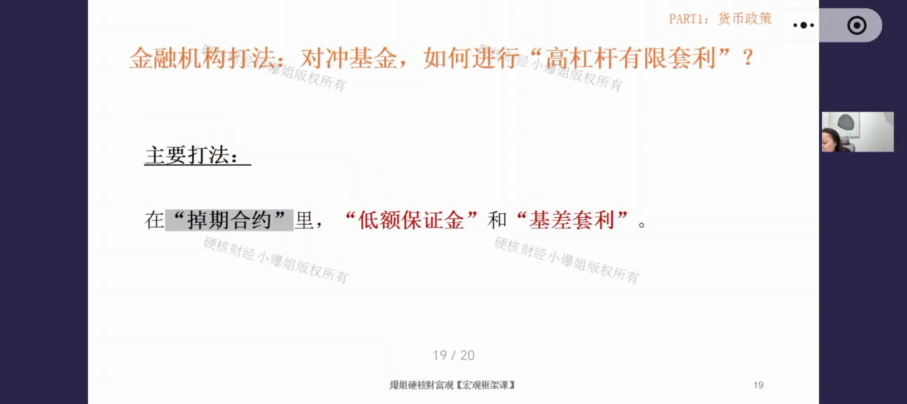
- 为什么赚不到利率差：对冲基金换汇的本金是借来的，掉期里的利率差要拿去支付借款利息，拿不到手。
- 赚什么：靠低额保证金的高杠杆 + 基差。一般企业做掉期要全额抵押本币，但对冲基金从外汇主经纪商（背后就是做市商）那里只交5%（甚至3%、10%）保证金，就能借到全额本币去做掉期。
算账：基差负50bps（−0.5%），保证金5% → 20倍杠杆 → 收益率 = 0.5% × 20 = 10%。
如果基差收窄到负25bps：收益率降到5%——对冲基金就看不上不做了，因为还要面对对手违约风险、保证金浮动补仓损耗，不如直接买投资级债券（如苹果债）更省心。
实操关键：基差不是银行直接报给你的——银行给的是"基差折算后的掉期报价"。你要先算出"没有基差时的理论报价"，再用银行报价倒推出实际基差，判断值不值得做。
结论：金融机构都是靠衍生品赚外汇的钱，没有人用现汇做。外汇市场专业化程度极高，不是普通老百姓能玩的——不要惦记赚外汇的钱，除非你有真实资产要买。
十二、小结：即期、远期、掉期的特性与差别
以 USD/CNY 为例，三种工具的特性与差别：
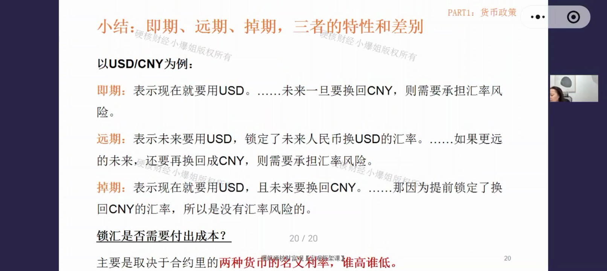
- 即期：表示现在就要用美元。未来一旦要换回人民币，就要承担汇率风险（没做锁汇）。适合"当下就要花且不回流"。
- 远期：表示未来要用美元，锁定了未来人民币换美元的汇率。但如果更远的未来还要换回人民币，就要承担汇率风险（只锁了出去的汇率）。适合"未来要花且不回流"。
- 掉期：表示现在就要用美元，且未来要换回人民币。即期腿现在换掉（已无汇率风险），远期腿提前锁定换回汇率，全程无汇率风险。适合"当下需借外币，且未来资金会回流"。
锁汇是否需要付出成本？不一定要花钱，可能还赚钱。主要取决于合约里两种货币的名义利率谁高谁低，以及用谁换谁的方向——人民币对美元是低利率方，但人民币对日元就是高利率方，要相对地看。
利率与汇率的关系（课程升华）：远期、掉期的定价都由利率决定，不是汇率本身的高低。这些衍生品又会反过来影响即期汇率——市场上存在大量存量的远期/掉期合约，利率一旦变化，合约要重新定价，重定价过程就会影响现在的即期汇率。所以汇率和利率的相关性非常强，影响汇率最重要的因素之一就是利率。
三个关键认知：① 影响汇率最重要的因素之一是利率（利率课要仔细听）；② 即期/远期/掉期应用在不同场景，无绝对好坏，结合实际需求选择；③ 通过换汇存外币储蓄极不靠谱——正规机构不是那种打法，普通人珍惜自己的钱，不要跟风。
课程知识卡片（专业版）
以下为课程配套的专业版知识卡片，标题为"货币政策第12期：汇率（5）——外汇掉期合约解析与机构跨币种套利实战"，汇总了本期核心知识点的完整框架。

专业版卡片文字摘要
- 课程简介：本节课攻克外汇衍生品中最核心、应用最广的工具——掉期合约（Swap）。不同于远期合约的单一锁定，掉期合约通过"即期换出+远期换回"的双腿结构，完美解决机构在跨境业务中的外币融资与汇率风险锁定的双重痛点。课程深入拆解掉期成本的计算方式与"基差"的成因，更以日本寿险和对冲基金为例，硬核复盘机构通过期限溢价、信用利差及高杠杆进行跨币种套利的真实打法。学完本课，将彻底粉碎"散户无脑换美元吃息差"的危险迷思。
- 知识点1：掉期合约的本质与"双腿"结构。本质定义——银行与客户间一前一后两次方向相反的本外币交换，实质上是一种需本币抵押的短期外币融资与换钱协议。双腿结构：① 即期腿（Spot Leg）：当下立即执行，如企业将人民币抵押给银行，立即换出美元以解燃眉之急；② 远期腿（Forward Leg）：未来约定时间执行，按提前锁定的汇率，用收回的美元换回人民币本金。实践运用：掉期将两笔交易打包成"单一交易"，只需一次报价结算，相比企业自行组合"即期+远期"，在交易成本（免双重点差/佣金）、流动性（央行亦用其释放流动性）、监管便利（视为跨境融资而非资本流出）、税收优惠（作为衍生品一般无资本利得税，欧盟等地还有明确的税收豁免）四个维度全面占优。
- 知识点2：掉期与远期合约的核心差异。方向差异（最容易混的点）：同样是"USD/CNY"，在远期合约中表示"用后面的CNY换前面的USD"（买方视角），在掉期合约的远期腿中表示"用前面的USD换回后面的CNY"（完成闭环）。利率影响：远期合约中利率高的货币在未来报价中贬值；掉期合约（远期腿）中利率低的货币在换回时数量变少（产生货币损失）——如人民币利率低于美元，在USD/CNY掉期的远期腿（用USD换回CNY）中，1亿美元换回的人民币数量会少于当初抵押出去的人民币本金（如抵押7.12亿→回收7.06亿，损失600万）。实践运用：在使用衍生品时必须明确业务场景——即期用于"当下就要花且不回流"，远期用于"未来就要花且不回流"，掉期专用于"当下需借外币，且未来资金会回流本币"的场景，实现融资与锁汇的闭环。
- 知识点3：掉期的三大经典应用场景。场景一——出口商现金流错配：解决"当前需付美元买原料，半年后才收美元货款"的期限错配，并锁定结汇利润。场景二——跨境投资规避风险：QDII债基（如多利宝底层）在投资海外债券时，必须用掉期锁定人民币计价的年化回报，防止美债微薄的收益被人民币升值带来的汇兑损失吞噬。场景三——短期流动性管理：以极低成本借入外币（仅承担两国货币市场利率差），避免了直接发行美元信用债所叠加的高昂信用利差。实践运用：无论是企业出海还是国内QDII产品，只要涉及跨币种资产配置，掉期对冲是必选项——不使用衍生品锁汇的跨境投资，本质上是在"裸奔"赌单边方向。
- 知识点4：基差（Basis）的成因与经济含义。锁汇成本估算——粗略等于两货币的市场利率差（你用啥换啥，就用前面的减后面的利率）。基差的出现——理论报价与实际报价的偏差，基差算在非美元腿上（如人民币）。负基差的含义：意味着美元变得更贵了——由于全球对冲美元资产的需求旺盛，而做市商（银行）受资本及流动性监管指标限制，美元供给受限，供需失衡导致借入美元需支付额外溢价。实践运用：基差的存在是市场情绪和流动性稀缺程度的真实反映。机构在套利前，必须倒推实际基差，权衡扣除基差后的利润是否能覆盖违约风险和资金成本。
- 知识点5：日本寿险与对冲基金的套利实战。日本寿险（求稳+增厚收益）——虽锁汇成本高，但通过期限错配（掉期展期滚动，底仓买30年美债赚取期限溢价≈1.1%）和下沉信用（买入投资级信用债赚取信用利差≈0.82%），可在基础收益1%之上额外套取近2%的风险溢价，整体做到近3%的回报。对冲基金（极高杠杆套基差）——通过外汇主经纪商仅缴纳极低保证金（如5%即20倍杠杆），不赚利率差，专门利用高杠杆放大负基差的微小套利空间，实现10%以上的超额回报。实践运用：机构赚取的是复杂的期限溢价、信用溢价以及极高杠杆下的结构性套利，全程有严密的对冲保护——这与散户单纯依靠现汇硬扛汇率波动的投机行为有天壤之别。
- 课程总结：掉期合约是连接本币与外币流动性的核心桥梁。它以"双腿结构"打包了即期融资与远期锁汇，不仅大幅降低交易摩擦成本，更享受监管层面的优待。通过解剖掉期的锁汇成本与基差，我们看到了外汇市场真实的供需博弈；通过复盘保险与对冲基金的实战，我们揭开了机构利用期限、信用及杠杆进行跨币种套利的冰山一角。这一整套精密运转的衍生品体系再次敲响警钟：跨币种的储蓄本质上就是高风险的投资，普通人不应在缺乏工具与认知的情况下，踏入机构收割的猎场。
课程知识卡片（极简版）
以下为极简版知识卡片（副标题：揭秘掉期交易与打脸"无脑换美元"），用问答形式快速回顾核心概念。
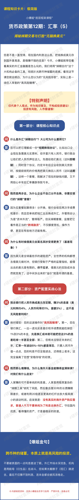
极简版卡片文字摘要
- Q：什么是外汇"掉期合约"？大公司为什么要用它？
A：可以把它理解成一份"短期换钱协议"。比如出口企业现在急需美元买原料，但手里只有人民币。银行就会让他们把人民币押在这儿，先借给他们美元（这叫即期腿）；同时签个协议，约定半年后企业收到美元货款时，按提前锁死的价格再把美元换回人民币（这叫远期腿）。这样一个套餐，既解决了现在的缺钱问题，又不用担心半年后汇率暴跌导致亏本。
- Q：既然是两步走，为什么企业不自己分开去换，非要买银行的"掉期"套餐？
A：因为买套餐划算得多！分开换，银行会收您两次手续费和差价；而且您单纯把钱汇出去换成外汇，外管局会认为是"资本外流"，管得极严。但买掉期套餐，监管把它看作是正当的"跨境融资"，不仅额度宽松，操作方便，甚至在有些地方还能免税。
- Q：为什么有时候借美元会莫名其妙变得更贵了（基差现象）？
A：因为美元是全球最抢手的避险资产。全世界的机构都想去借美元做对冲，但银行受制于严格的监管指标，能借出去的美元是有限的。供不应求，借美元的实际成本自然就变高了，这中间多出来的"溢价"就是所谓的基差。
- Q：我去银行把人民币换成美元存定期，赚3%的息差（美元利率约4%，人民币利率约1%，差额3%），这不是无风险套利吗？
A：绝对错觉！您的这波操作叫"高风险赌博"。第一，您在银行换汇，一出一进光买卖差价和手续费就能吃掉您1%到3%的本金，光是换汇成本就可能把您这3%的息差吃掉一半甚至全部；第二，您根本没锁定未来的汇率，汇率一年波动5%-10%都是常态，只要人民币升值一点点，您的利息不仅全赔进去，还得搭上老本。这完全偏离了您想"安稳存钱"的初衷。
- Q：既然那么难赚钱，为什么海外大基金能赚得盆满钵满？对我们有什么启发？
A：人家赚的可不是单纯的利息差。人家是用极其复杂的"掉期工具"锁死了风险，然后靠去借30年的长债赚期限差价，或者利用20倍甚至更高的杠杆去放大极其微小的波动利润。启发就是：没有真实的海外资产购买需求，普通人千万不要单纯为了利息去换外汇。守住国内优质、看得懂的资产，才是最稳妥的财道。
- 爆姐金句："跨币种的储蓄，本质上就是高风险的投资。不要被表面的一点利息差迷了眼。外汇市场水深流急，机构是用航母（衍生品）在战斗，您如果光着膀子（现汇）跳进去，最后不仅赚不到利息，连本金都会被风浪卷走。"